0Leave zone
8Park here
3Go up ramp
4Open door
1Look up/down
2Go around ramps
5Calm Zone
6WC toilet
7Order a drink
Tap a station to open its guide
Activity Guides
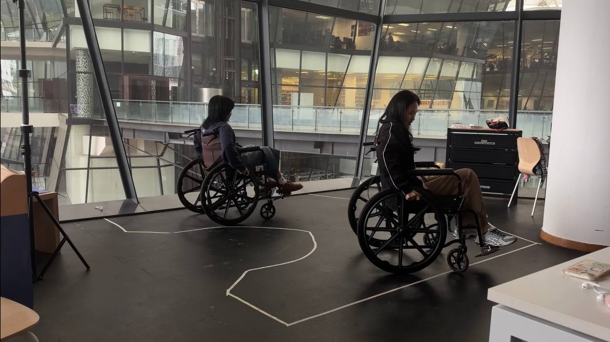
Leaving the wheelchair zone
ACTIVITY 0
Leave wheelchair zone
Guide the activity- Guide the participant to leave the wheelchair zone.
- Optional: with the participant’s agreement, add removable red tape to their trouser legs as a visual cue. Do not apply tape directly to skin.
Ask them to noticeNotice the space and steps involved in starting the route.
Safety prompt- Check that no one is standing in the wheelchair zone.
- Watch the participant’s limbs around the wheels and footrests.
ACTIVITY 1
Look up and down
Follow the steps in order. Tap a step to open its guide.
ACTIVITY 1aLook up
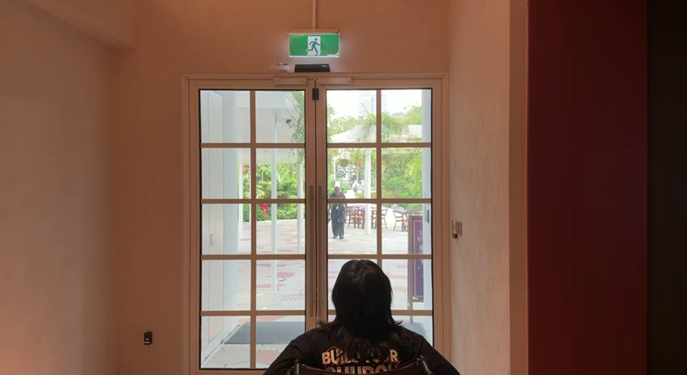
Looking toward the exit signGuide the activityInvite the participant to look up along the route.
Ask them to noticeNotice overhead signs, doorways, and what is visible from the wheelchair.
Safety promptBefore stopping to look around, check that the route is clear and watch for passengers passing by.
ACTIVITY 1bLook down
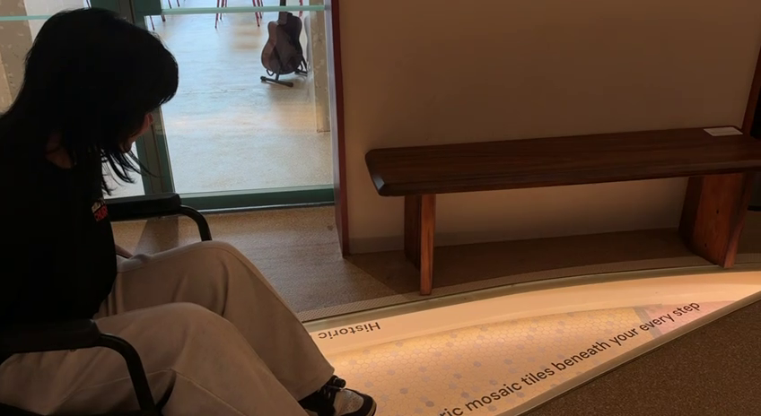
Looking down at the floor mosaicGuide the activityInvite the participant to look down along the route.
Ask them to noticeNotice things on the floor, including the surface, markings, and changes in the route.
Safety promptBefore stopping to look around, check that the route is clear and watch for passengers passing by.
ACTIVITY 2
Go around the ramps
Follow the steps in order. Tap a step to open its guide.
ACTIVITY 2aGo up curve ramp
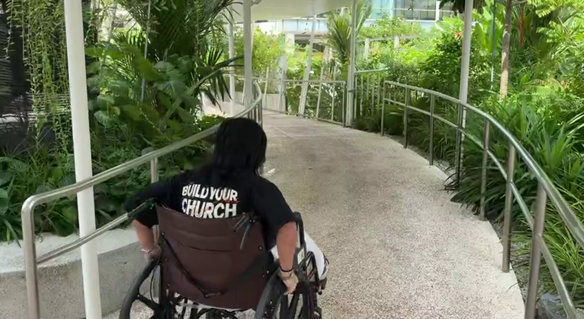
Moving up the curved rampGuide the activityGuide the participant up the curve ramp.
Ask them to noticeNotice how the curve ramp differs from the other ramps, including its slope, surface, effort, and control.
Safety prompt- Position a helper behind the participant on the ascent.
- Check for passersby.
- Stop if the route is not clear.
ACTIVITY 2bGo to next ramp
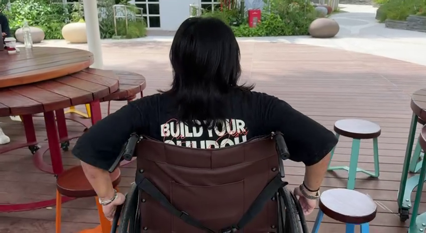
Moving across to the next rampGuide the activityGuide the participant from the curve ramp to the next ramp.
Ask them to noticeNotice the transition between ramps and how cramped the route feels around the tables.
Safety prompt- Check for passersby and allow enough space around the tables.
- Pause if the route is not clear.
ACTIVITY 2cGo down straight ramp
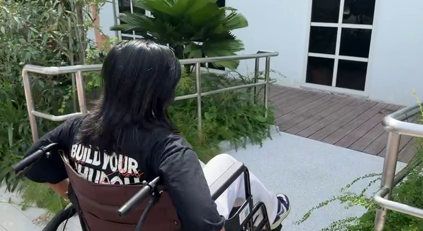
Approaching the glass exit doorsGuide the activityGuide the participant down the straight ramp.
Ask them to noticeNotice the slope, surface, effort, and control while going down.
Safety prompt- Position a helper below the ramp on the descent.
- Check for passersby.
- Stop if the route is not clear.
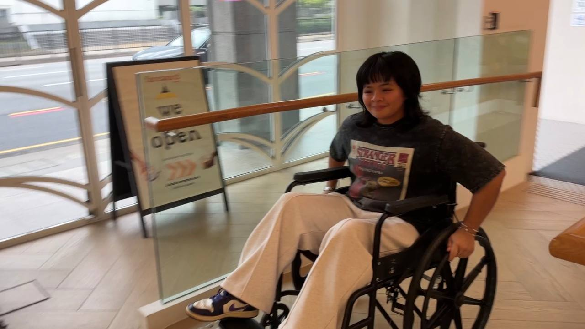
Wheelchair user at the entrance
ACTIVITY 3
Go up the ramp
Guide the activityInvite the participant to go up the ramp at their own pace.
Ask them to noticeHow is this ramp different from the other ramps? What changes in effort, control, and movement as they go up?
Safety prompt- Check for passersby before starting.
- Stop if the route is not clear or the participant wants to stop.
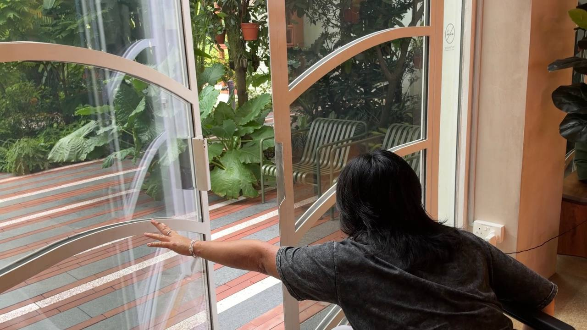
Opening a door from a wheelchair
ACTIVITY 4
Open the door
Guide the activityInvite the participant to open the door and pass through.
Ask them to noticeNotice reach, force, timing, and space while managing the door.
Safety prompt- Attempt the door only when no one is trying to pass.
- Keep the wheelchair stable to reduce the risk of a fall.
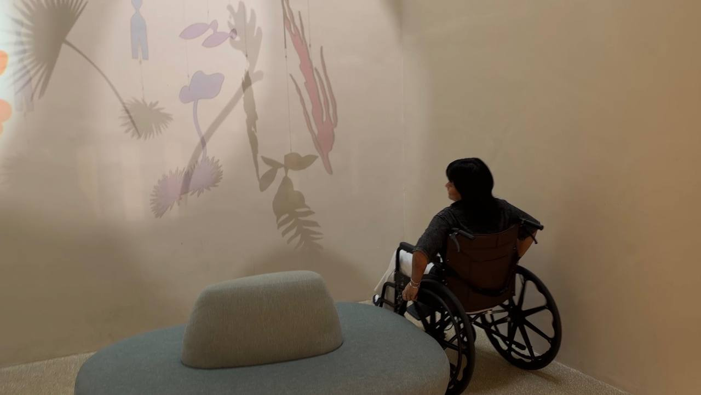
At the Calm Zone
ACTIVITY 5
Circle at Calm Zone
Guide the activityInvite the participant to move in two circles at the Calm Zone, if they feel comfortable.
Ask them to noticeNotice turning space, control, and how the wheelchair responds.
Safety prompt- Check the participant’s energy level.
- They can choose more or fewer than two circles, take a break, or stop at any time.
ACTIVITY 6
WC toilet
Follow the steps in order. Tap a step to open its guide.
ACTIVITY 6aGo to the WC toilet
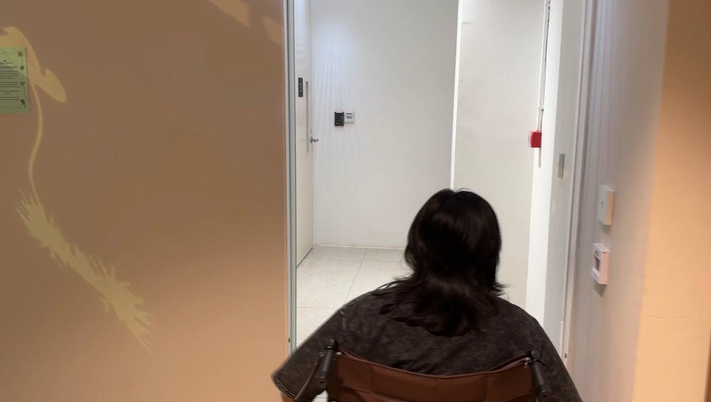
Finding the WCGuide the activityGuide the participant to the WC toilet.
Ask them to noticeAsk the participant whether the toilet was easy to find, and notice the route, turning space, and approach.
Safety promptCheck that the toilet is unoccupied. If it is in use, substitute a chair for this activity.
ACTIVITY 6bOpen and close the door
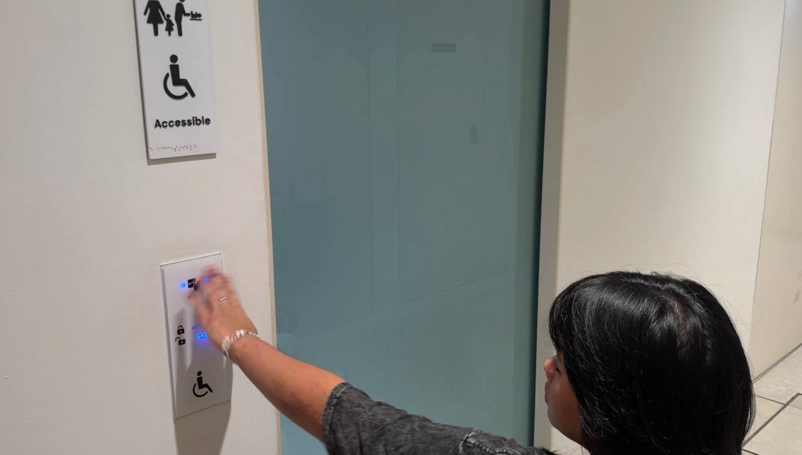
Opening and closing the WC doorGuide the activityLet the participant work out how to open and close the door; offer guidance only if they ask for it.
Ask them to noticeNotice how easy or difficult it is to use the door scanner, including reach, force, clearance, and positioning.
Safety promptWatch for passengers passing by and keep the doorway clear.
ACTIVITY 6cGet on the toilet
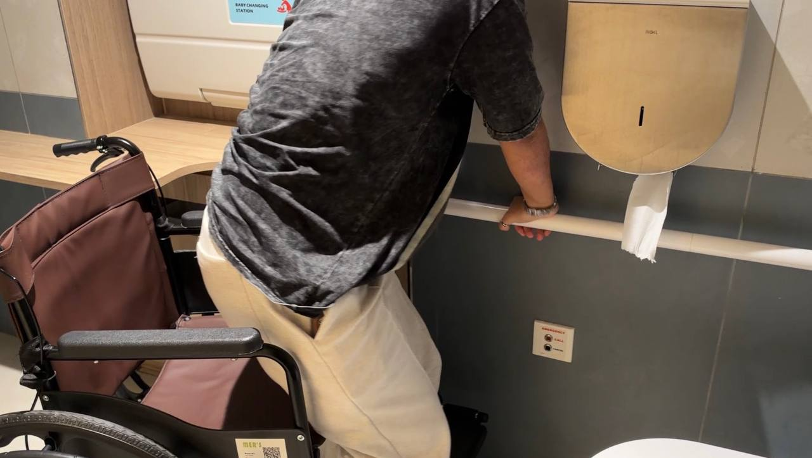
Transfer to the toiletGuide the activityIf the participant is unsure, offer guidance about where to place their hands before they attempt the transfer.
Ask them to noticeNotice the space, positioning, and movements involved.
Safety prompt- Make sure the wheelchair is stable and stay close in your assigned support role.
- Do not force an attempt. Stop if the participant is unsure or uncomfortable.
ACTIVITY 6dGet back on the wheelchair
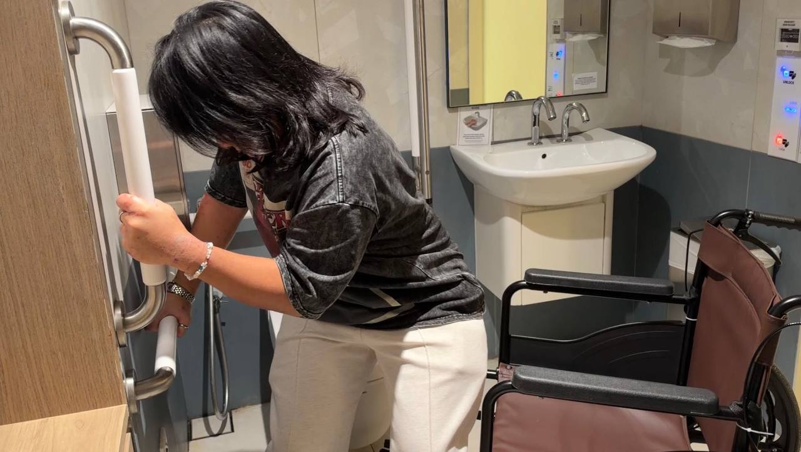
Returning to the wheelchairGuide the activityIf the participant is unsure, offer guidance about where to place their hands before they return to the wheelchair.
Ask them to noticeNotice how their hands feel during the return movement and what the movement requires.
Safety prompt- Make sure the wheelchair is stable and stay close in your assigned support role.
- Do not force an attempt. Stop if the participant is unsure or uncomfortable.
ACTIVITY 6eOpen the door and leave
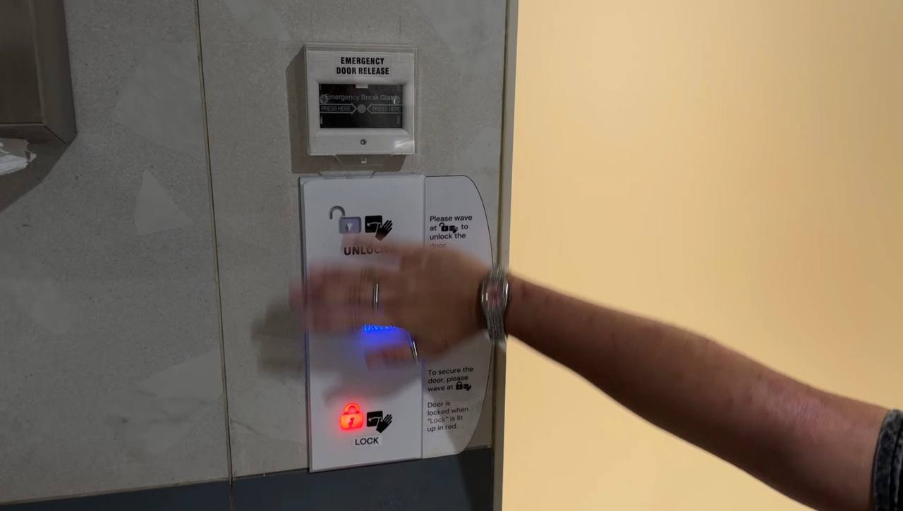
Leaving the WCGuide the activityLet the participant work out how to open the door and leave the toilet area; offer guidance only if they ask for it.
Ask them to noticeNotice door operation and moving through the doorway.
Safety promptWatch for passersby along the way and keep the route clear.
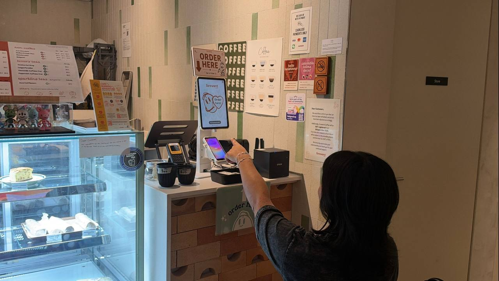
Ordering at the counter
ACTIVITY 7 · OPTIONAL
Order a drink
Guide the activityInvite the participant to order a drink, if they choose.
Ask them to noticeNotice counter height, reach, menu visibility, and communication.
Safety promptIf other customers are waiting, let them order first when appropriate.
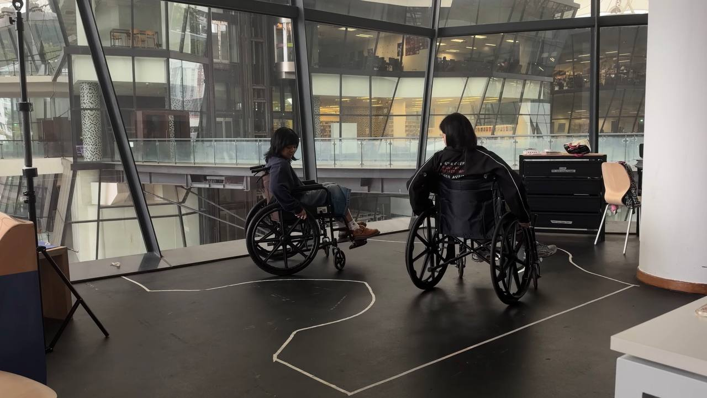
Parking back at the wheelchair zone
ACTIVITY 8
Park back at the wheelchair zone
Guide the activityGuide the participant to park back at the wheelchair zone.
Ask them to noticeNotice the space and manoeuvres needed to approach and park.
Safety promptBefore parking, make sure no one is standing in the wheelchair zone.
ACTIVITY 3
Go up the ramp
Guide the activityInvite the participant to go up the ramp at their own pace.
Ask them to noticeWhat changes in effort, control, and movement as they go up?
Safety promptCheck that the route is clear and pause if the participant wants to stop.

IMAGE AREAAdd an activity photo or still here
Activity image